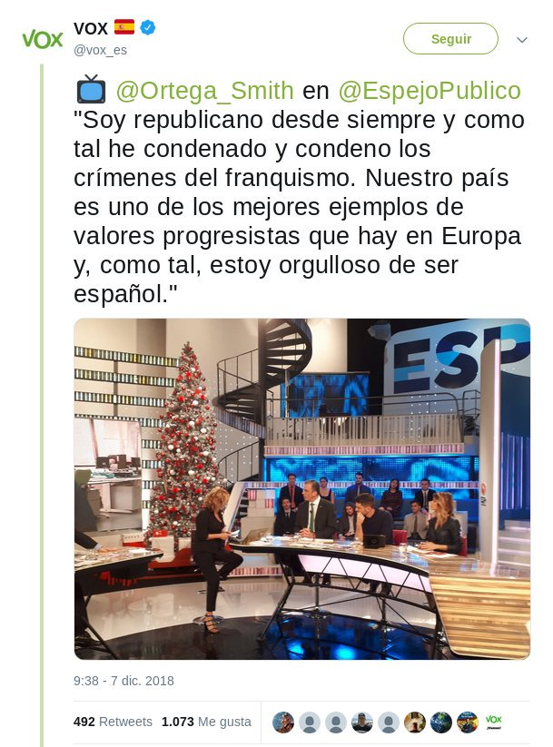

Vox por la República
En diciembre de 2018, un usuario en redes sociales cuelga la siguiente captura de pantalla en el que se recogen las declaraciones de Ortega Smith en espejo público.

<<< Volver a las preguntas

Este obra está bajo una licencia de Creative Commons Reconocimiento-CompartirIgual 4.0 Internacional.